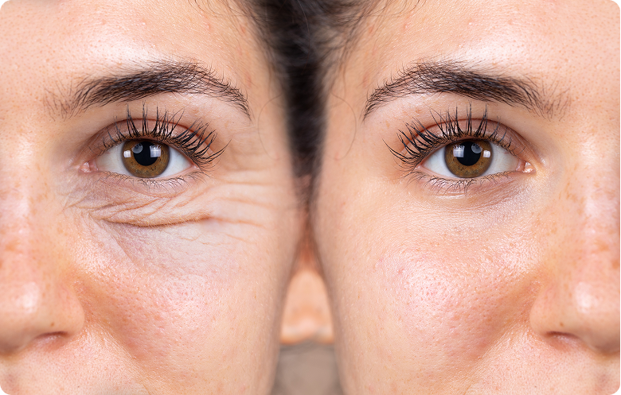
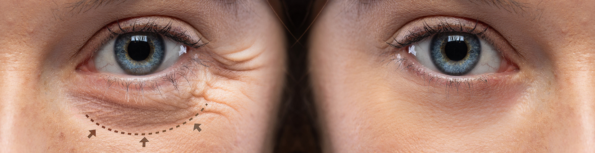

Com a Dra. Jamile Andraus - Especialista em Plástica Ocular
AGENDE UMA AVALIAÇÃO
Com o passar do tempo, é natural que a pele das pálpebras perca firmeza, provocando excesso de pele e bolsas de gordura que dão ao rosto uma expressão de cansaço.
A blefaroplastia é uma cirurgia delicada que corrige esses sinais, sem alterar sua identidade facial.
O resultado é um olhar mais leve, jovem e natural, em harmonia com o restante do rosto.
Atendimento em ambiente seguro, com técnica refinada e acompanhamento personalizado.
MAIS DO QUE REMOVER O EXCESSO DE PELE, MEU OBJETIVO É REALÇAR A BELEZA DO OLHAR, MANTENDO A AUTENTICIDADE E O EQUILÍBRIO DO ROSTO.
DRA. JAMILE ANDRAUS
Médica oftalmologista com atuação voltada à saúde dos olhos e à região periocular, a Dra. Jamile Andraus une precisão técnica, sensibilidade estética e olhar humano.
Excesso de pele nas pálpebras superiores ou inferiores
Bolsas de gordura que deixam o olhar inchado ou cansado
Flacidez palpebral que altera a expressão facial
Ptose (queda) das pálpebras
Desejo de rejuvenescimento natural e duradouro
Superior, inferior ou completa, conforme a necessidade de cada paciente.

Rejuvenescimento do olhar sem alterar os traços
Expressão mais leve, natural e descansada
Melhora estética e funcional das pálpebras
Recuperação tranquila e resultados duradouros
Rejuvenescimento natural e duradouro
Técnica segura e precisa, conduzida por especialista em plástica ocular
DRA. JAMILE ANDRAUS GERAISSATE
Médica Oftalmologista - Especialista em Plástica Ocular
Residência Médica em Oftalmologia - Hospital Fundação Banco de Olhos de Goiás (FUBOG)
Fellowship em Plástica Ocular - Centro de Referência em Oftalmologia (CEROF / UFG)
Curso de Ciências Básicas em Oftalmologia - UNIFESP
Curso Teórico-Prático de Ptose Palpebral - USP
Título de Especialista em Oftalmologia pela Associação Médica Brasileira e Conselho Brasileiro de Oftalmologia
Membro efetivo da Sociedade Brasileira de Cirurgia Plástica Ocular (SBCPO)
Fiz minha blefaroplastia há 6 meses e estou simplesmente encantada com o resultado. Sempre me incomodaram as pálpebras caídas e as bolsas nos olhos, parecia que eu estava sempre cansada, mesmo descansando bem. Depois da cirurgia, meu olhar ganhou uma nova vida, mais leve, mais aberto e com um ar super natural. O pós-operatório foi tranquilo, a Dra. Jamile me acompanhou de perto e me senti muito acolhida em cada etapa. Hoje me olho no espelho e finalmente me reconheço de novo, só que mais jovem, confiante e feliz. Foi uma das melhores decisões que já tomei na vida. Recomendo de coração essa profissional competente, empática e muito profissional. Eu faria tudo de novo.
VGS
Dra Jamile além de excelente profissional é uma pessoa muito atenciosa, cuidadosa e humana. Graças a Deus ela é minha médica dos olhos e do olhar.
Rosangela FPB Machado
Dr Jamile foi a única pessoa na qual confiei p fazer a blefaroplastia, pela sua competência, experiência e por entender e respeitar o que cada mulher pretende com essa cirurgia.
Daisy Lage